A model of a microstrip tee junction is published in [36]. Figure 11.8 shows a unsymmetrical microstrip tee with the main arms consisting of port a and b and with the side arm consisting of port 2. The following model describes the gray area. The equivalent circuit is depicted in figure 11.9. It consists of a shunt reactance 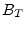, one transformer in each main arm (ratios 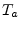 and 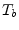) and a microstrip line in each arm (width 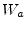, 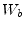 and 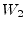).
First, let us define some quantities. Each of them is used in the equations below with an index of the arm they belong to (, 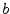 or 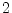).
| equivalent parallel plate line width: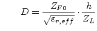 | (11.207) |
where 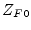 is vacuum field impedance, 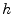 height of substrate,
 effective, relative dielectric constant, 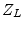
microstrip line impedance.
effective, relative dielectric constant, 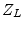
microstrip line impedance.
| first higher order mode cut-off frequency: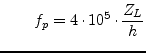 | (11.208) |
| effective wave length of the microstrip quasi-TEM mode: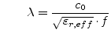 | (11.209) |
The main arm displacements of the reference planes from the center lines are (index 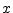 stand for or ):
The length of the line in the main arms is:
| 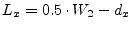 | (11.211) |
The side arm displacement of the reference planes from the center lines is:
The length of the line in the side arm is:
| 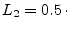 max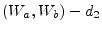 | (11.213) |
| 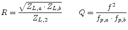 | (11.214) |
Turn ratio of transformers in the side arms:
Shunt susceptance:
| 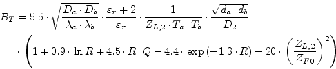 | (11.216) |
For better implementation of the microstrip tee (figure 11.9) the device parameter of the internal equivalent circuit (two transformers and the shunt susceptance) are given below. The port numbering for them is port a = 1, port b = 2 and port 2 = 3.
| 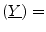 infinity | (11.217) |
| 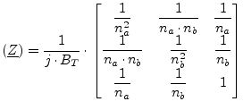 | (11.218) |
| 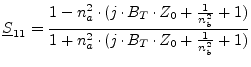 | (11.219) |
| 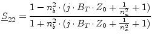 | (11.220) |
| 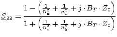 | (11.221) |
| 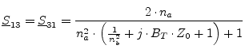 | (11.222) |
| 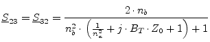 | (11.223) |
| 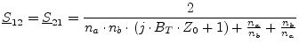 | (11.224) |
The MNA matrix representation can be derived from the Z parameters in the following way.
| 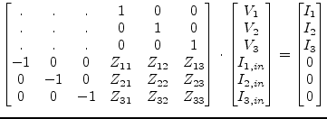 | (11.225) |
Please note that the main arm displacements in eq. (11.210) yield two small microstrip lines at each main arm and the side arm displacement of eq. (11.212) results in a small microstrip strip line as well, but with negative length, i.e. kind of phaseshifter here.
The transformer ratios defined in eq. (11.215) are going to be negative with increasing frequency which produces complex values in the Z-parameter matrix as well as in the S-parameter matrix. That is why the ratios are delimited to a minimum value.